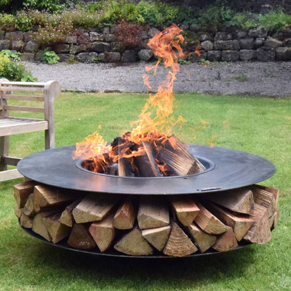
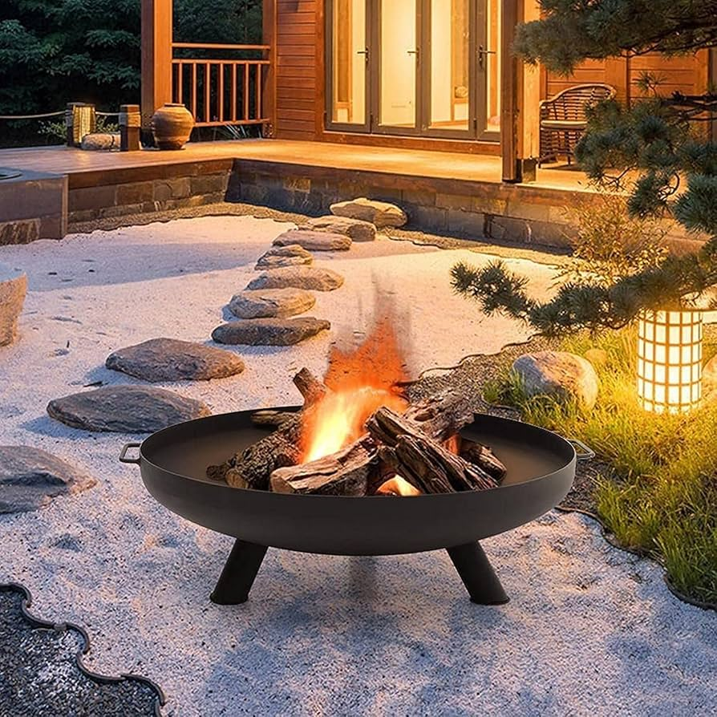

Welcome to Antonio's Fire Pits
Transform Your Outdoor Space
Transform your outdoor space into a cozy, inviting retreat with one of our high-quality fire pits. Whether you’re hosting a family gathering, enjoying a quiet evening, or entertaining friends, our fire pits offer the warmth and ambiance you need to enhance any occasion. Designed with both functionality and style in mind, our fire pits come in various designs, materials, and sizes to suit every outdoor aesthetic. Experience the magic of a crackling fire under the stars, surrounded by the comfort of friends and family.
Top Fire Pits

The Sandwich
Designed for those who appreciate the crackle and warmth of a traditional wood fire, this fire pit offers a cozy and authentic outdoor experience. Perfect for roasting marshmallows, telling stories, and enjoying the simple pleasure of a real flame.

The Wok
Inspired by the classic cooking vessel, its wide, curved design creates a captivating centerpiece while efficiently distributing heat. Ideal for cooking over an open flame or simply enjoying the warmth and ambiance it provides.

The Egg
Add a unique touch to your outdoor space with our Egg-Shaped Fire Pit. Its distinctive oval opening creates a warm, inviting ambiance while its sleek design complements any style. Perfect for cozy gatherings or quiet evenings under the stars.